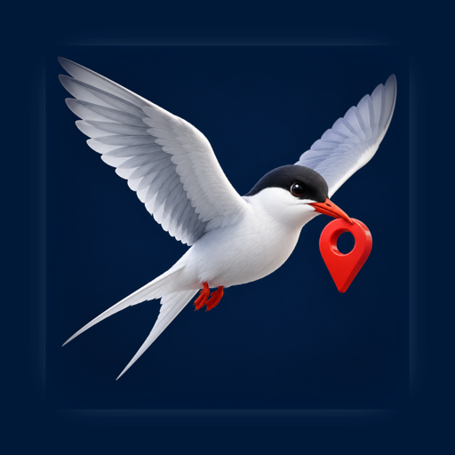
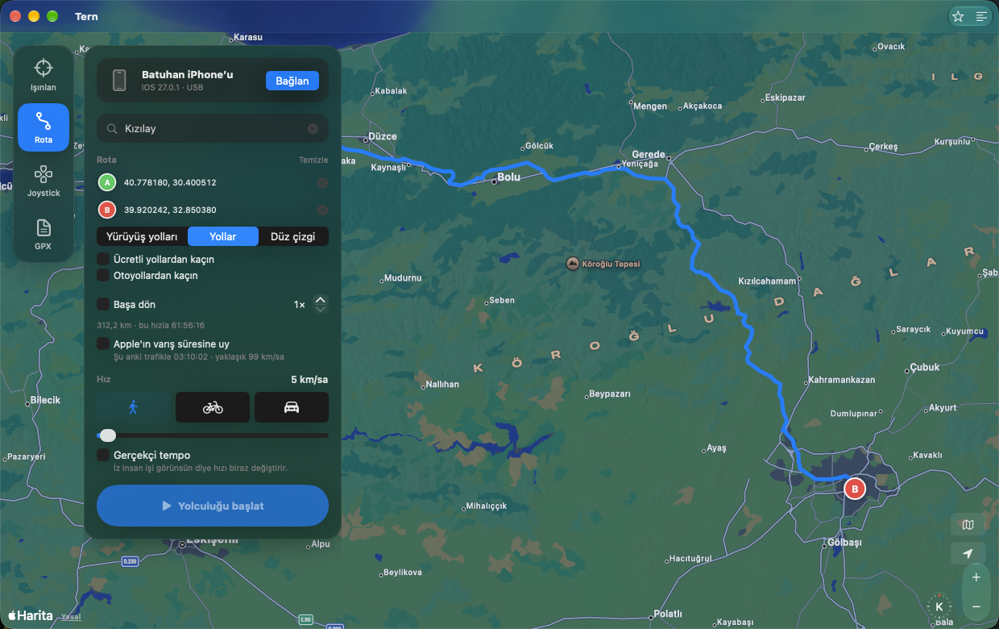

Tern simulates the location of an iPhone from your Mac. Teleport to a point, drive a route on real roads, steer with a joystick or replay a GPX file. Free for personal use, source on GitHub, no jailbreak, no account.
Free for personal use · PolyForm Noncommercial · macOS 15 or later · iPhone with Developer Mode on

Click the map or search an address, press Go. The phone is there.
Pick stops; Tern asks Apple Maps for the road route, driving or walking. Avoid tolls or highways, go round trip, loop it.
Drag a knob or use the arrow keys to walk around freely at the speed you set.
Open any GPX track and play it back. Timestamps are ignored; your speed rules.
Follow Apple's travel-time estimate, which includes live traffic, instead of a fixed speed. Add "realistic pace" so the trace does not look machine-made.
iOS 17 and later use a userspace tunnel, so Tern never needs root. Older devices get the developer disk image mounted automatically.
Tern uses the same developer location channel Xcode uses. A small open-source helper built on go-ios opens a tunnel to the phone and keeps the location channel alive while a route plays. Stop, disconnect or quit and the phone is back to its real position.
Simulating your location breaks the rules of many games and dating apps, and they do ban accounts for it. Tern is a developer and testing tool. What you do with it is on you.
iPhone'unuzu Mac'ten haritada istediğiniz yere taşıyın. Tern, USB ile bağlı bir iPhone'un konumunu simüle eden kişisel kullanımda ücretsiz, kaynağı açık bir macOS uygulamasıdır. Ticari kullanım izne tabidir. Bir noktaya ışınlanın, gerçek yolları izleyen bir rotada sürün ya da yürüyün, joystick ile dolaşın veya bir GPX kaydını oynatın. Jailbreak yok, hesap yok, şifre sorusu yok.
Rota modunda yol tarifi Apple Haritalar'dan gelir; ücretli yollardan ya da otoyollardan kaçınabilir, gidiş-dönüş yapabilir, Apple'ın canlı trafikli varış süresine uyabilirsiniz. Durdurduğunuzda ya da bağlantıyı kestiğinizde telefon gerçek konumuna döner.
Gereksinimler: macOS 15 ya da üstü, Geliştirici Modu açık bir iPhone, ilk bağlantı için USB kablosu.
Konum simülasyonu birçok oyunun ve flört uygulamasının kurallarına aykırıdır ve hesap kapatma sebebidir. Tern bir geliştirme ve test aracıdır.